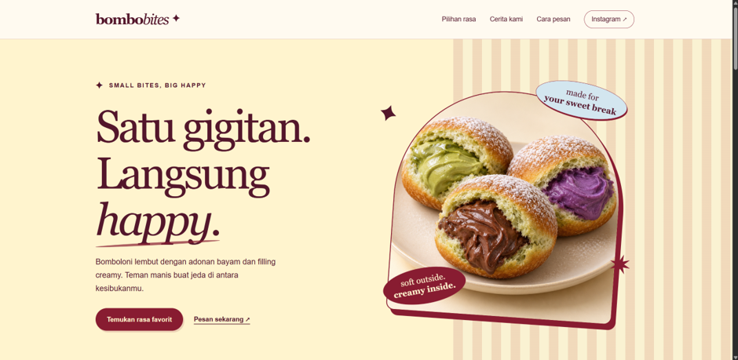
01 / WEB DEVELOPMENT
BomboBites
Website pre-order bomboloni dengan katalog produk dan pemesanan melalui Google Form.
Kunjungi website ↗MAHASISWA TI · UNIVERSITAS JEMBER
Saya Diego Valentino Augusta. Belajar pengembangan web dan perangkat lunak, dengan rasa ingin tahu pada keamanan siber.
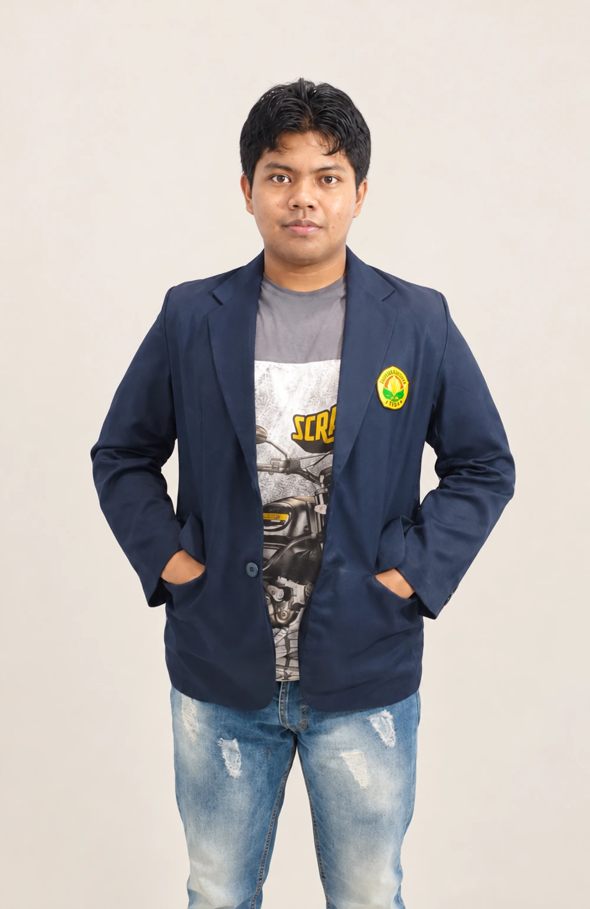
TEKNOLOGI YANG SAYA PRAKTIKKAN
01 — TENTANG SAYA
Saya belajar membuat website dan aplikasi lewat tugas kuliah serta proyek bersama teman.
Saya mahasiswa S1 Teknologi Informasi di Universitas Jember. Proyek yang pernah saya kerjakan meliputi website BomboBites, aplikasi MyBibit, dan AGROKOPI. Dari proyek-proyek ini, saya belajar menyusun tampilan, menulis logika program, dan menggunakan database.
Di kampus, saya ikut kepanitiaan HIMATIF sebagai Seksi Acara dan bertugas sebagai MC. Dari kegiatan ini, saya belajar berbicara di depan umum dan bekerja sama dengan panitia lain.
DIPRAKTIKKAN DALAM PROYEK
Sedang dipelajari: Linux, jaringan, keamanan informasi, dan red teaming.
02 — PROYEK PILIHAN
Tiga proyek yang pernah
saya kerjakan.

01 / WEB DEVELOPMENT
Website pre-order bomboloni dengan katalog produk dan pemesanan melalui Google Form.
Kunjungi website ↗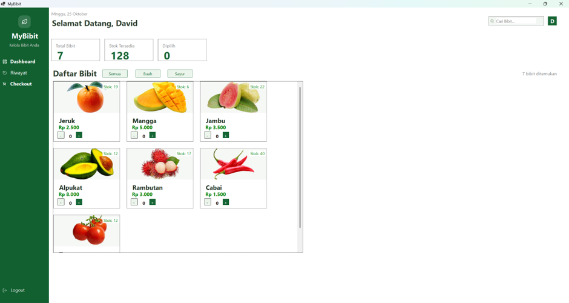
02 / PROYEK KELOMPOK · DESKTOP
Proyek pengelolaan bibit. Dokumentasi menampilkan login, katalog, dan informasi stok bibit.
Lihat repository ↗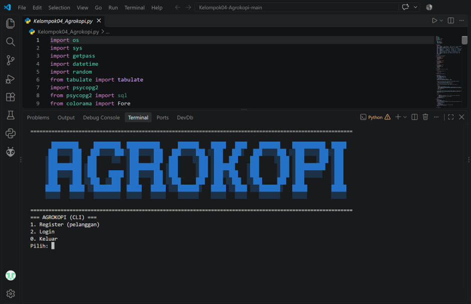
03 / PROYEK KELOMPOK · CLI
Aplikasi terminal penjualan kopi dengan produk, transaksi, riwayat pesanan, dan laporan harian.
Lihat repository ↗03 — DI LUAR KODE
Pengalaman kepanitiaan
dan kegiatan kampus.
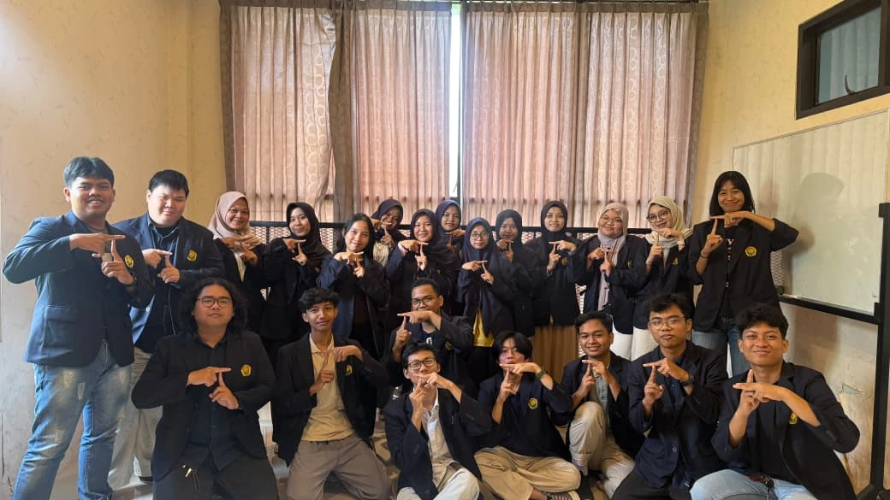
HIMATIF UNEJ · 2026
Saya menjadi panitia Seksi Acara dan bertugas sebagai MC pada Talk In Tech 6.0.
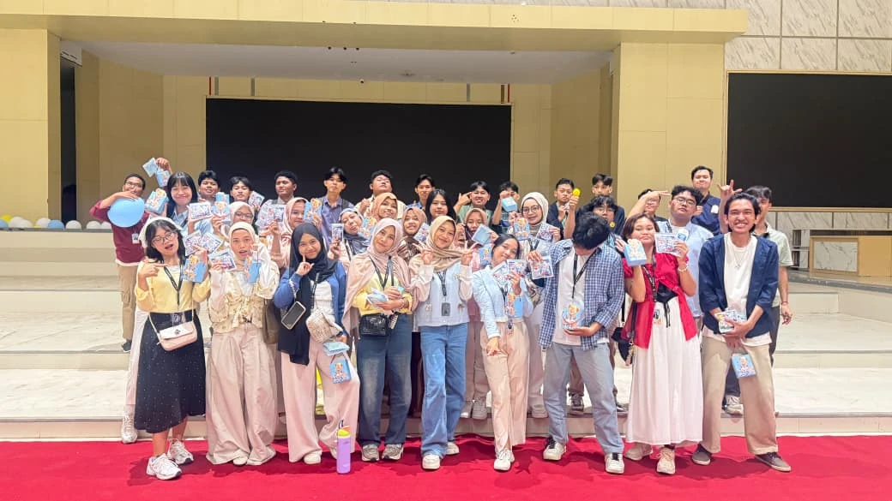
HIMATIF UNEJ · 2026
Saya menjadi panitia Seksi Acara dan bertugas sebagai MC pada Diesgreet & Welcoming Session 2026.
PENDIDIKAN
S1 Teknologi Informasi · Fakultas Ilmu Komputer
04 — BUKTI PROSES BELAJAR
Beberapa pelatihan dan kegiatan yang pernah saya ikuti.
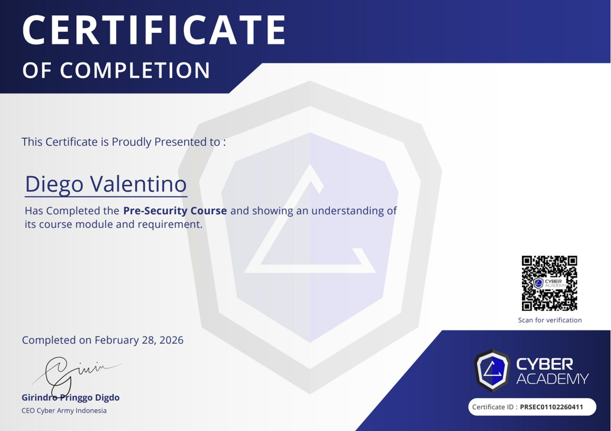
Lihat dokumen ↗Cyber Academy Indonesia
Menyelesaikan kelas dasar IT dan keamanan siber di Cyber Academy Indonesia.
Cyber Academy Indonesia
Menyelesaikan kelas pengantar keamanan informasi di Cyber Academy Indonesia.
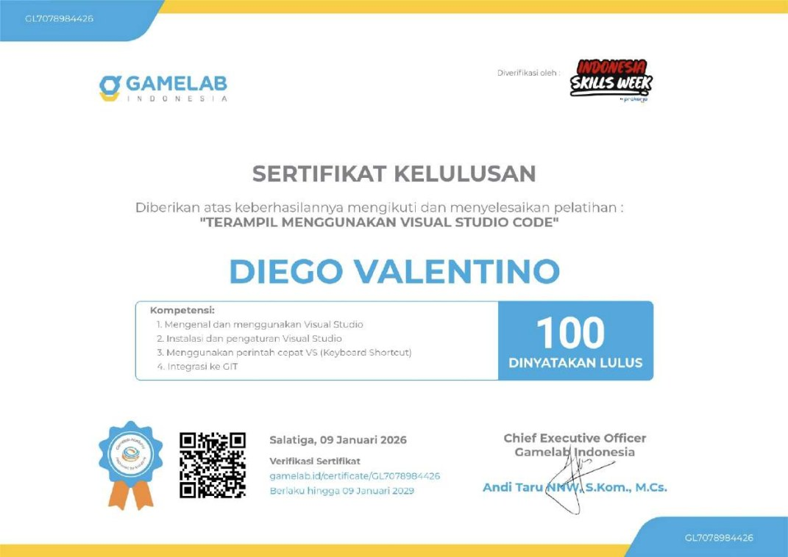
Lihat dokumen ↗Gamelab Indonesia
Lulus pelatihan dengan nilai 100. Berlaku sampai 9 Januari 2029.
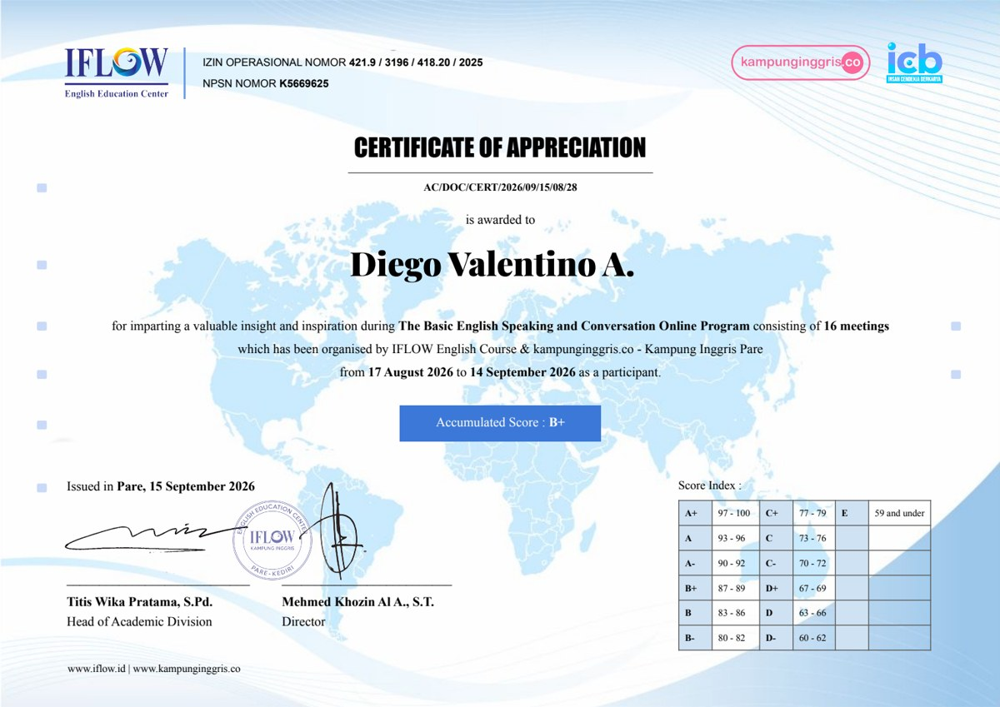
Lihat dokumen ↗IFLOW English Course · kampunginggris.co
Peserta program 16 pertemuan, 17 Agustus–14 September 2026. Nilai B+.
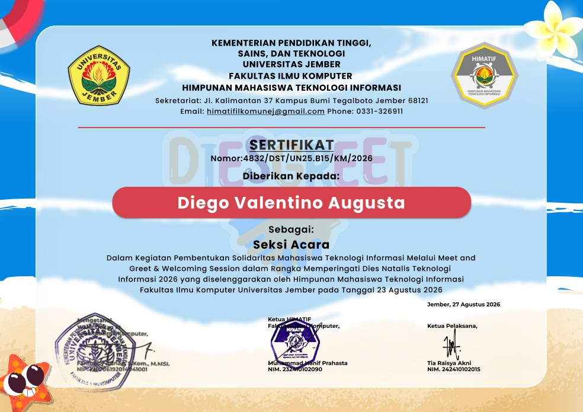
Lihat dokumen ↗HIMATIF · Fasilkom UNEJ
Panitia Seksi Acara dalam kegiatan HIMATIF, Fakultas Ilmu Komputer, Universitas Jember.
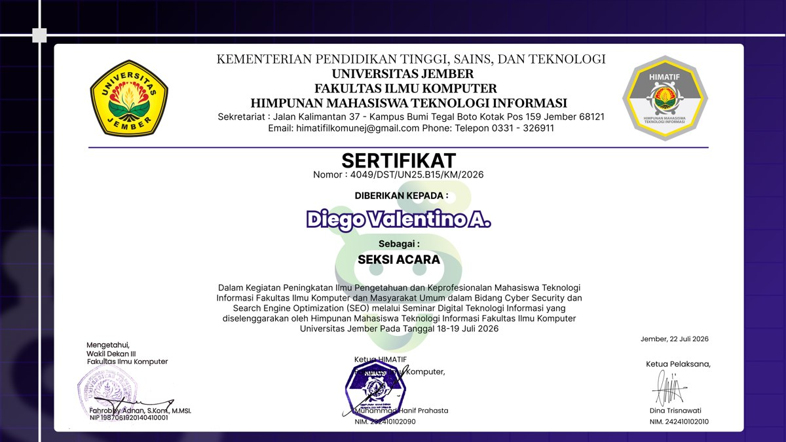
Lihat dokumen ↗HIMATIF · Fasilkom UNEJ
Panitia Seksi Acara dalam kegiatan HIMATIF, Fakultas Ilmu Komputer, Universitas Jember.
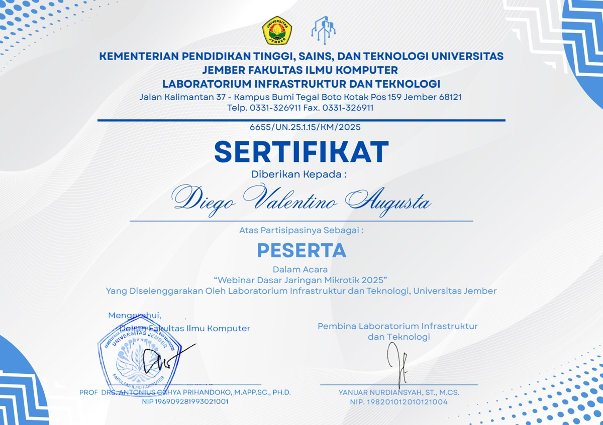
Lihat dokumen ↗Laboratorium Infrastruktur dan Teknologi · UNEJ
Peserta webinar pengantar dasar jaringan MikroTik.
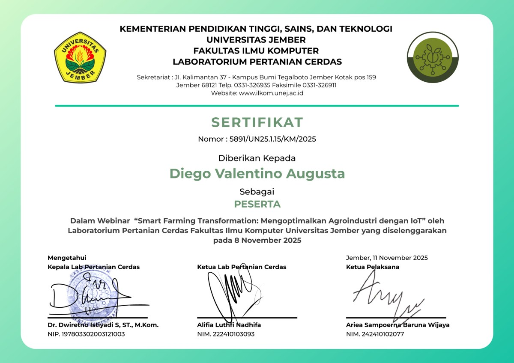
Lihat dokumen ↗Laboratorium Pertanian Cerdas · UNEJ
Peserta webinar yang diselenggarakan pada 8 November 2025.
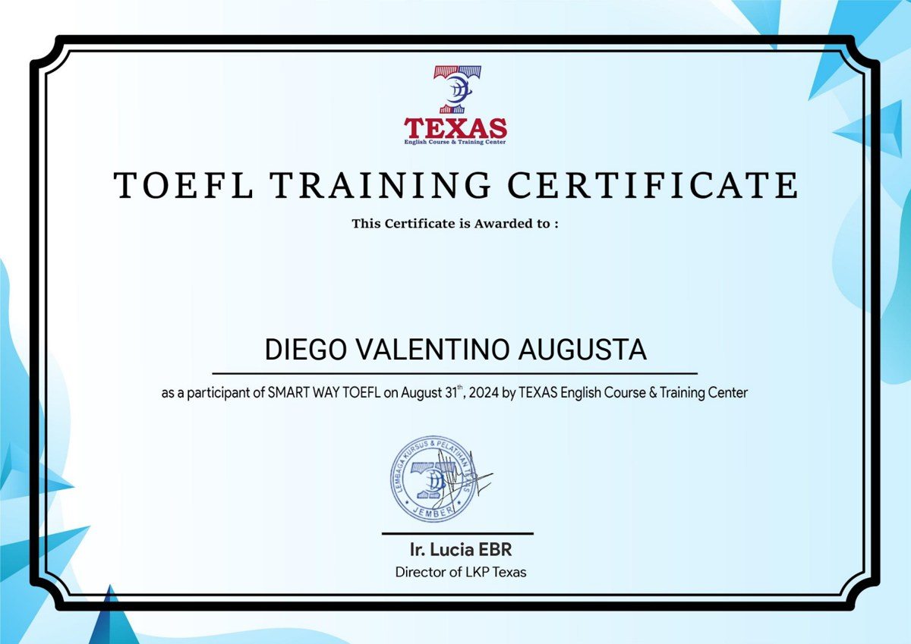
Lihat dokumen ↗TEXAS English Course & Training Center
Peserta program SMART WAY TOEFL yang diselenggarakan TEXAS English Course & Training Center.
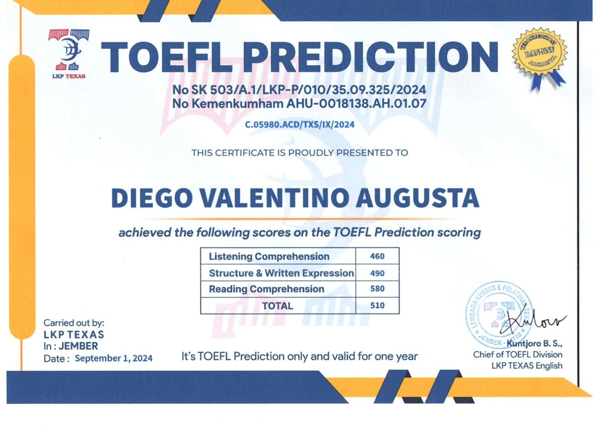
Lihat dokumen ↗LKP TEXAS · Jember
Hasil tes prediksi TOEFL dengan skor 510. Tertulis berlaku satu tahun; masa berlaku telah berakhir pada September 2025. Ditampilkan sebagai arsip, bukan hasil tes aktif. Salinan publik: tanggal lahir disamarkan.
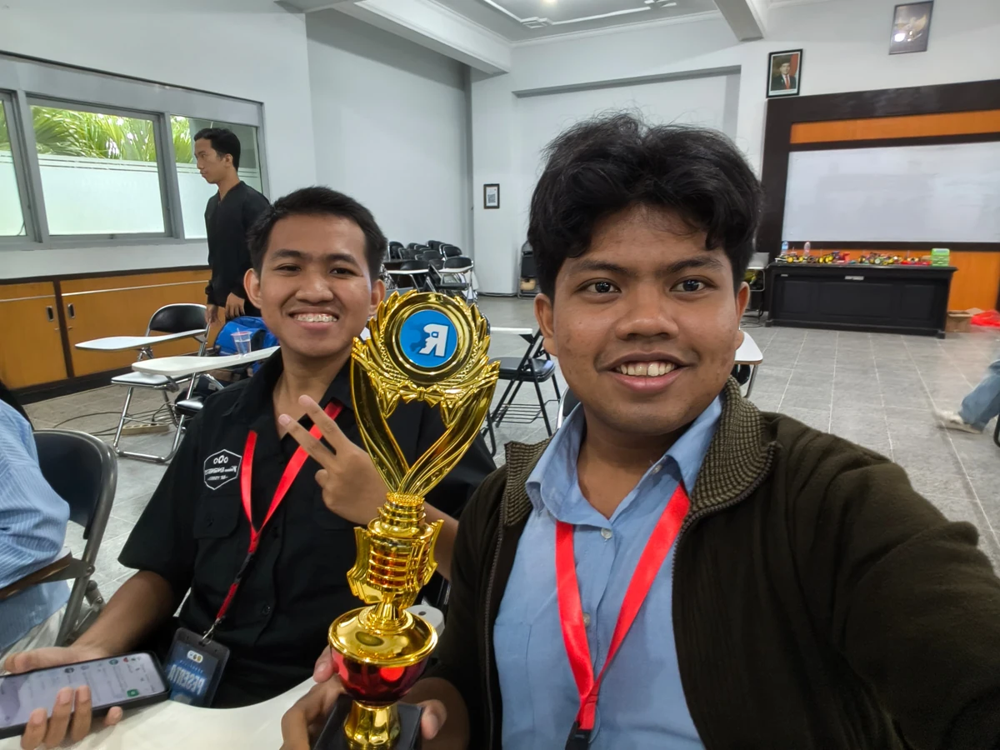
DOKUMENTASI PENGHARGAAN · 2025
Meraih penghargaan bersama tim dalam kompetisi robotika yang diselenggarakan LAB PC, Fasilkom UNEJ. Saya berperan sebagai pilot robot, mengendalikan pergerakan robot selama pertandingan.
Pilot Robot · Kerja Tim05 — KENALI LEBIH LENGKAP
Unduh dokumen untuk melihat pendidikan, pengalaman,
dan
dokumentasi proyek saya lebih dekat.
06 — MARI TERHUBUNG
Saya terbuka untuk kesempatan magang,
kolaborasi proyek, dan
bertukar pengetahuan.